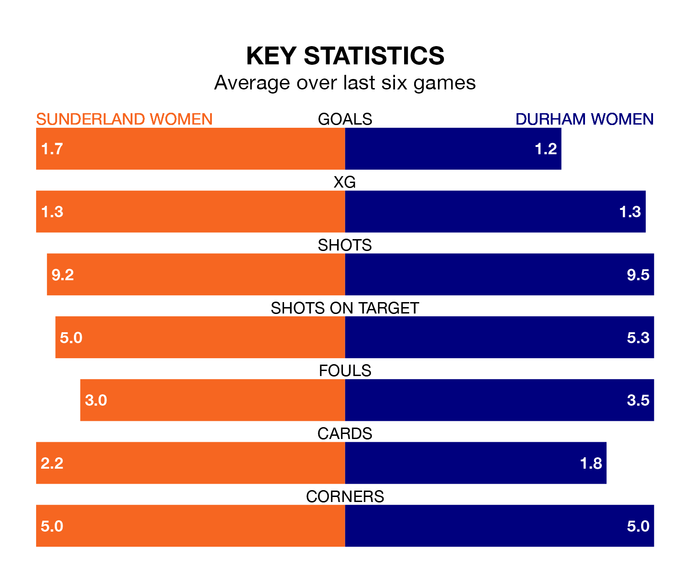

Sunderland Women host Durham Women in Sunday's early match at the Eppleton Colliery Football Ground looking to bounce back from defeat last time out in the FA Women's Championship.
Sunderland, who sit top of the league after 18 games, fell to a 1-0 away defeat to London City Lionesses on March 17.
They face a Durham side who also lost their last match, a 1-0 defeat to Charlton Athletic Women, and who sit eighth in the table.
In Claudia Moan, Sunderland can rely on one of the league's safest pair of hands. She has kept eight clean sheets in her 18 appearances this season, and no 'keeper has prevented the opposition scoring more often in the FA Women's Championship.
In Durham's net, Naoisha McAloon has two clean sheets in nine games. She has conceded a goal every 41 minutes, three times as often as the 135 minutes between goals for Moan.
The hosts are in reasonable form in the FA Women's Championship, with four wins and two losses from their last six games.
With no wins and three draws over that period, the away side's form is much worse – they have taken three points from 18, compared to Sunderland's 12.
In the last 10 years, Sunderland and Durham have played each other on nine occasions. Sunderland won four of them, Durham three, and they drew twice.
On average, Sunderland scored 1.3 goals and Durham 1.3 in those matches.
Their last meeting was on November 8, when Durham won 3-2 away.
With 19 goals in 18 games so far this season, Durham are scoring at below the league average rate with 1.1 goals per game. And they are conceding more than average, letting in 33 goals at a rate of 1.8 per game.
Sunderland, meanwhile, are average scorers, with 1.3 goals per game. They have conceded 0.8 goals per game.
Updated: 10:19 (UTC), 22/03/24